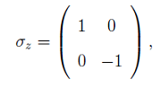
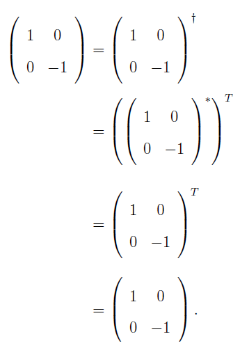

Sigma Z Operator
The last of the three Pauli matrices is the Z operator which is also Hermitian and unitary.
This is commonly referred to as the σz operator. On the Bloch sphere, it is equivalent to a
rotation around the z-axis by an angle of π. The 2x2 matrix form of the operator is given

which is Hermitian and can be verified
